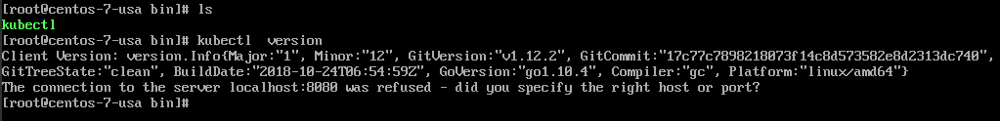
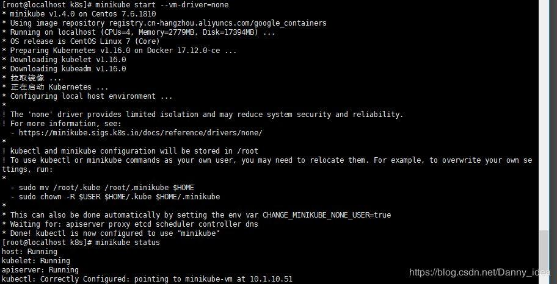
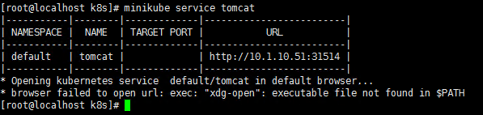
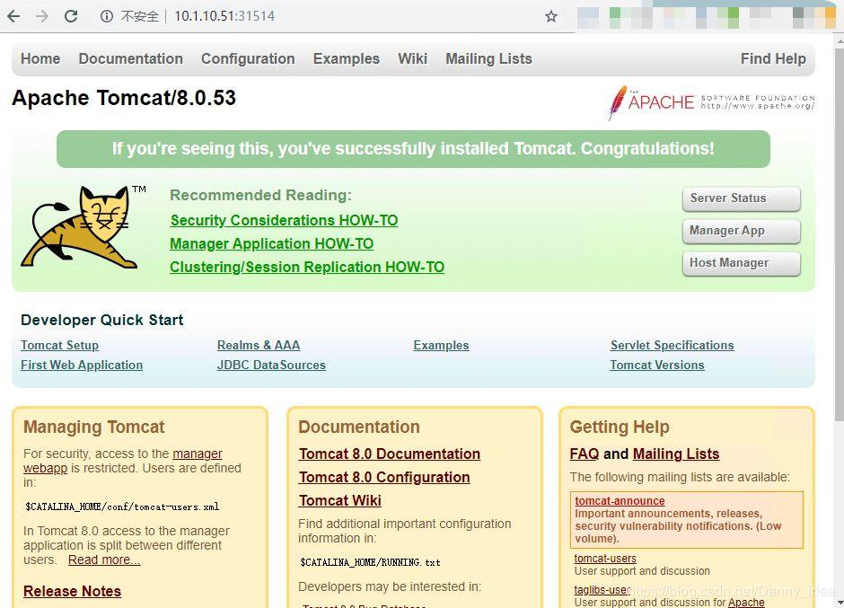

在之前的几篇文章中，主要还是讲解了关于简单的docker容器该如何进行管理和操作，在接下来的这篇文章开始，我们将开始进入对于k8s模块的学习
不熟悉的可以先回顾之前的章节，Docker教程系列文章将归置到菜单栏：连载中..->Docker一栏。
在进行对k8s的学习之前，我们首先来进行几个知识点的回顾：
什么是容器？
docker自身具有哪些特点？
什么是容器？
通俗易懂地来讲，容器是一系列相互隔离的进程。它们自身具备有轻量操作系统层面的虚拟化技术，每个容器都有着自己的PID,User，UTS，和传统的虚拟机相比，容器技术更加地轻便，带来的损耗也更加小。
docker自身具有哪些特点？
docker有着一次构建，到处运行的特点。其本身是通过cgroup来进行信息内存监控的，并且通过namespace来实现进程的隔离。
简单地来说namespace就是一种Linux内部提供的用于隔离环境的技术，cgroup最早是由google内部的工程师发起的，该技术可以更好的将一些共享的系统资源分配给指定的进程使用。所以说实际上docker只是个除了使用了go语言以外，其他都比较旧的东西。
随着技术的不断发展，原先简单的容器技术也开始面对着不一样的全新挑战。例如说：跨机器的部署， 资源的调度，各个不同的容器进行负载均衡等问题都开始逐渐引发了工程师们的思考。
我们前一篇文章中有提到一种叫做docker compose的技术，这种技术确实解决了多个容器之间相互依赖，手动启动容器的繁琐问题。
市面上比较成熟的容器编排平台有Kubernetes和Docker Swarm两类平台，前者是由google公司进行研发的，后者则是由Docker公司自身进行开发的。本文我们主要还是围绕k8s来进行讲解。
相信对于k8s感兴趣的朋友，应该有去网上搜过一些安装k8s的文章，但是其中大多数都被 “梯子” 给卡死了。笔者也是在网上搜刮了大量的资料，踩扁了许多坑，才将下边的内容帮大家进行了汇总，希望下边的内容对你有帮助。
由于k8s集群搭建的机器成本过高，官方提供了一个叫做 Minikube 的东西，供初学者入门学习。笔者之前试过通过美国的服务器来搭建minikube，但是这样的教程对于国内大多数的开发者来说实用性并不高。后来将源地址切换为了阿里云的源地址，发现难度会降低很多，不得不说阿里云还是很良心的。
一台centos7的虚拟机 或者 云主机，建议cpu至少为2核，内存大于2gb，并且网络通畅。
对于docker环境的安装我在这里还是列出来比较好，minikube对于docker依赖的版本其实是有匹配的，过高的docker的版本环境中反而会导致minikube的安装失败。这里我采用了 docker-ce 17.12.0 版本
相关的安装指令如下：
#移除原先的docker安装包
yum remove docker docker-common docker-selinux docker-engine
#安装必备的插件
yum install -y yum-utils device-mapper-persistent-data lvm2
#设置docker的安装源头
#查看所有仓库中所有docker版本，并选择特定版本安装
yum list docker-ce --showduplicates | sort -r
#安装指定版本的docker
yum install docker-ce-17.12.0.ce
#启动docker,并设置为开机自启动
systemctl start docker
systemctl enable docker
#最后验证docker版本
docker version
这个时候我们的docker环境就已经安装完毕了，那么接下来我们便开始进入kubectl的安装了。
kubectl是啥？通俗易懂地来理解，这个东西就是一个管理k8s集群的命令发送工具，没有kubectl 我们没法对集群进行各种管理，所以接下来我们需要对它进行安装。
首先是下载kubectl，阿里源的，国内开发者优先考虑：
curl -Lo kubectl http://kubernetes.oss-cn-hangzhou.aliyuncs.com/kubernetes-release/release/v1.16.0/bin/linux/amd64/kubectl
接着我们将其cp到/user/local/bin目录下边，并且进行授权：
cp kubectl /usr/local/bin
chmod +x kubectl
验证kubectl的方式：
kubectl version
在确认kubectl安装完成之后，会看到这样的界面：

下载
ps:这里我所采用的minikube版本为1.4.0
curl -Lo minikube http://kubernetes.oss-cn-hangzhou.aliyuncs.com/minikube/releases/v1.4.0/minikube-linux-amd64
chmod +x minikube
cp minikube /usr/local/bin
启动
minikube start --vm-driver=none
这里安装的过程可能会比较久，笔者当时大概等待了30分钟
ps:文章开头我提到过centos机器最好内存在2g以上，并且cpu内核数至少为2，否则启动的时候可能会报下边这种错误：
cpu数量不足异常
下边分享几个我在启动过程中遇到的问题：
[ERROR NumCPU]: the number of available CPUs 1 is less than the required 2
这个异常我曾经在github上边搜到过解决方式，通过添加--extra-config=kubeadm.ignore-preflight-errors=NumCPU --cpus 1命令的形式来解决，但是我试了下在不同版本的minikube上边这条命令所带来的效果并不一样，如果对你有帮助的话，可以尝试一下，完整命令如下：
minikube start --vm-driver=none --extra-config=kubeadm.ignore-preflight-errors=NumCPU --cpus 1
起初我在一台内存只有0.5g的机器上边启动minikube，结果报出了内存不足异常，核心描述如下：
k8s cannot allocate memory
关于这种异常唯一的解决方式就是加内存了。
minikube和docker的版本不匹配问题：
Docker 18.09: [ERROR SystemVerification]: unsupported docker version: 18.09.0
我在一开始的时候采用了过高版本的docker，导致后边安装minikube的时候出现异常。
当安装完成之后，你会看到这样的界面：

安装完成之后，我们可以通过命令来查看minikube是否运作成功
[root@localhost k8s]# minikube status
host: Running
kubelet: Running
apiserver: Running
kubectl: Correctly Configured: pointing to minikube-vm at 10.1.10.51
kubectl create deployment tomcat --image=tomcat:8.0
kubectl expose deployment tomcat --type=NodePort --port=8080
minikube service tomcat
启动tomcat服务成功之后，你可能会看到这样的信息：

然后我们通过访问这里的url路径进行测试：

ok访问成功了。
如果你到达了这一步，一切都还顺利的话，那么恭喜你，minikube的基本环境已经安装成功了，下边就只需要参考着官方文档进行对k8s的一步步学习了。
在下一篇文章里面，我会开始对k8s的各种命令，功能，结构进行讲解。
在上一篇的文章底部留言区，看到了一些网友的提问，我在这里进行统一回复一下：
@BC 读者的提问：
对于不同机器中的环境配置问题，可以在不同的机器上边设置一个环境变量值，例如说生产的机器，就定义一个变量：export ENV=prod
然后在dockerfile文件中引用环境变量的值，判断读取不同的配置，从而使得部署的机器能够自动识别读取不同的配置参数。
@忘忘不念。读者的提问：
关于docker pull超时的问题，通常的原因在于拉去镜像的地址有异常。docker一般都是往官方的Docker Hub中拉去镜像，通常拉去并不能成功，而且速度比较慢，建议可以给Docker配置一个国内的镜像源，例如说DaoCloud，使用的方法如下：
修改我们的 etc/default/docker文件配置：
DOCKER_OPTS="--registry-mirror=http://aad0405c.m.daocloud.io"
使用service docker restart重启Docker服务即可。
好了，今天的文章就到这里，搭建过程有问题可以留言，在下一篇 Docker从入门到掉坑 文章中将挑选比较普遍的问题给出解决。如果在搭建过程遇到有趣的问题解决了，也可以留言分享出来哦。